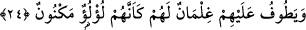
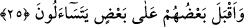

24. Hizmetlerine verilmiş, (kabuğunda) saklı inci gibi gençler etraflarında dönüp
dolaşırlar.
“Hizmetlerine verilmiş..” “Tavaf” bir şeyin etrafında yürümektir. Bu nedenle evlerin
etrafında onları korumak için dolaşan kimselere “tâif” denir. Yâni cennet ehlinin
etrafında kadehleri dolaştırarak gezinen veya başka bir görüşe göre hizmet için dolaşan
“gençler vardır.”
Ğılman, ğulâm kelimesinin çoğulu olup “daha bıyığı yeni çıkmış gençler” demektir.
Bunlar cennet ehline hizmet için tahsis edilmiş hizmetçilerdir. Allah Teâlâ’nın bu
hizmetçileri direkt onlara izâfe etmemesinin sebebi, onların dünyada kendilerine hizmet
eden kimseler olduğu zannına kapınılmasın, dünyada efendilerine hizmet eden her bir
kimsenin, âhirette de hizmet edeceği anlaşılıp da bunun böylece devam edeceğinden
dolayı üzüntü duyulmasın, içindir. “Ğılmân” kelimesinin nekre getirilmesinden maksad,
cennete girecek her kişinin, orada kendisine âid hiç tanımadığı pek çok hizmetçiyi
bulacağını ifâde etmek içindir. Sa’di Müftî’nin Havâşî’sinde de böyle geçmektedir.
“(Kabuğunda) saklı inci gibi.” Yâni onlar beyazlık ve saflıkta sedefin içinde gizli
inci gibiler. Zira onlar ter u tazelik açısından en güzel ve en saf vasıfta olup kendilerine
hiçbir el dokunmamış ve üzerlerinde hiç bir toz yoktur. Yahut onlar hazine gibi
gizlenmişlerdir. Zira ancak değeri fazla olan kıymetli şeyler gözden ırak olarak gizlenir.
Katâde’ye, “Hizmetçinin durumu belli, ya peki kendisine hizmet edilen kişi ne halde
olacak” diye sorulunca cevap olarak Rasûlullah (s.a.)’in şöyle buyurduğunu
nakletmiştir: “Nefsim yed-i kudretinde olan (Allah’a) yemin olsun ki hizmet edilen
kişinin hizmet edene nisbeti dolunay gecesinde ayın diğer yıldızlara olan üstünlüğü
gibidir.”[50] Yine Katâde o soru soran kişiye Rasûlullah (s.a.)’in: “Cennet ehlinin
mevki bakımından en aşağı olanı, hizmetçilerinden birini çağırdığında bininin birden
kendisine «buyurun efendim» diye icâbet ettiği kişidir”[51] hadîs-i şerifiyle cevap
vermiştir.
25. Cennettekiler birbirlerine dönüp sorarlar:
“Birbirlerine dönmüş”, bazı cennetlikler diğerlerine yüz göstermiş “soruyorlar:”
Yâni birbirlerine hallerinden, amellerinden ve Allah’ın yanında nâil oldukları
ikrâmlardan soruyorlar. Bunları sormalarının nedeni; lezzet almanın yanı sıra sohbet
eden kişilerin âdetlerinde olduğu gibi ulaşmış oldukları büyük nimetleri sayıp dökmek
ve ünsiyetlerinin tam olması içindir. Konuşmaya dalarken bazısının belli kişilere sorup